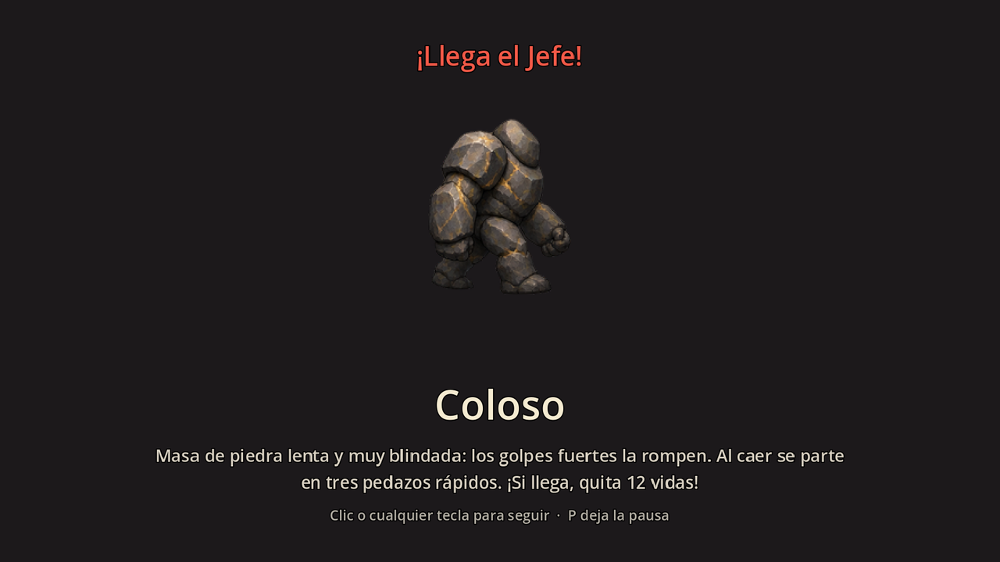
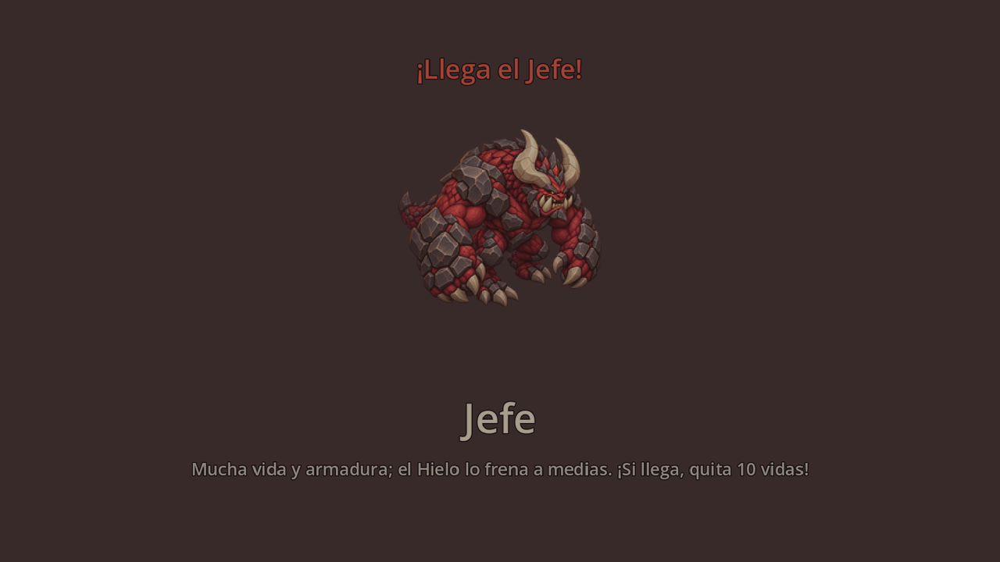
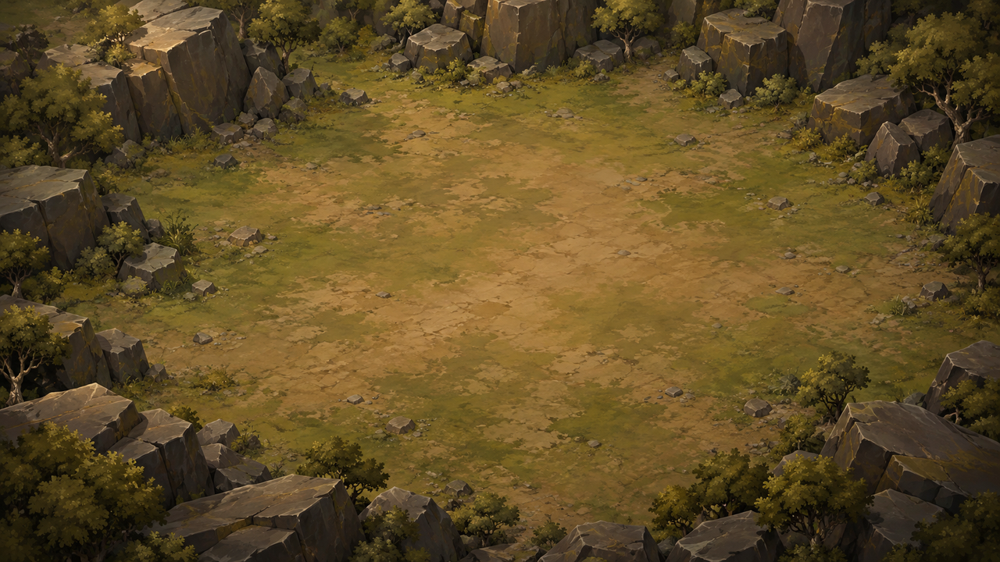
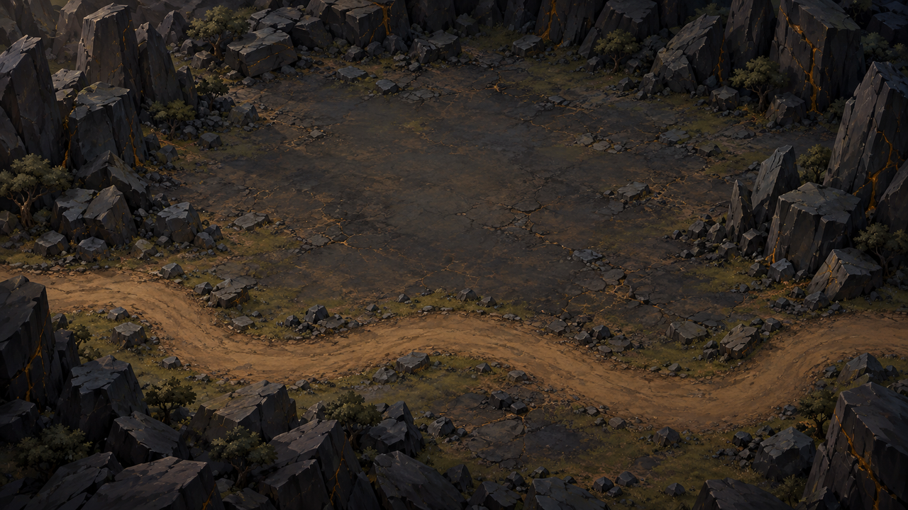
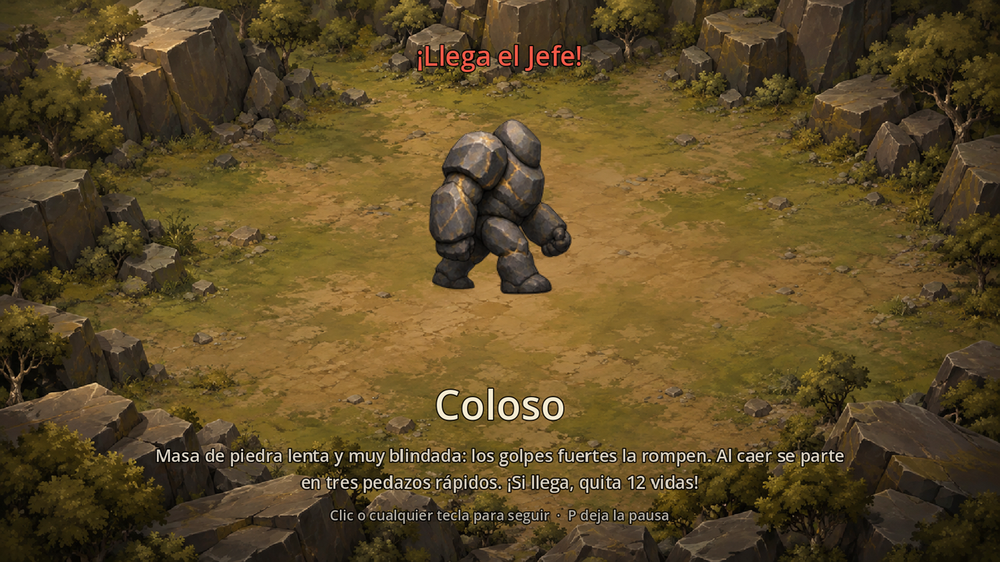
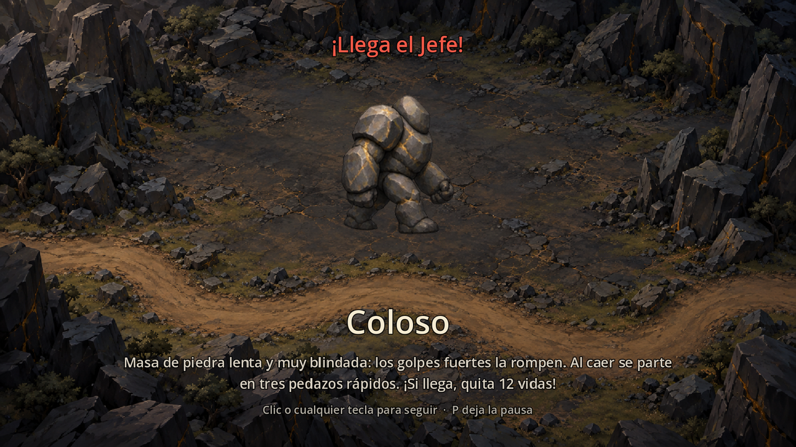

Fondo de la presentación del Coloso
Propuesta sin aprobar. Dos muestras dentro de la familia visual vigente del mapa. Las capturas de «en contexto» son de la escena real BossPresentation corriendo en Godot con una muestra pasada por setup(..., backdrop) y la ilustración provisional actual (el sprite de 256 px del Coloso); el arte definitivo de la ilustración es T367 y no está hecho.
1 · Lo que hay hoy (referencia)



2 · Muestras propuestas (1280×720)


3 · En contexto: Coloso sobre cada muestra

backdrop (ilustración provisional de 256 px, sin ajustes de código).
Observaciones honestas: (a) la descripción de dos renglones queda sobre roca y matorral y pierde contraste en ambas; haría falta un degradé oscuro por código detrás del texto (fuera del arte); (b) la ilustración de 256 px estirada a 360 px se ve blanda: la definitiva tiene que ser una pieza propia; (c) en la 02 el camino pasa detrás del renglón del nombre; se corrige en una segunda ronda si Lucas elige esa línea.
specs/tareas/informes/T463-propuesta-fondo-coloso.md, §6.Archivos: prompts · cómo se generó y la compuerta de estilo · propuesta descartada (cañón cinematográfico).